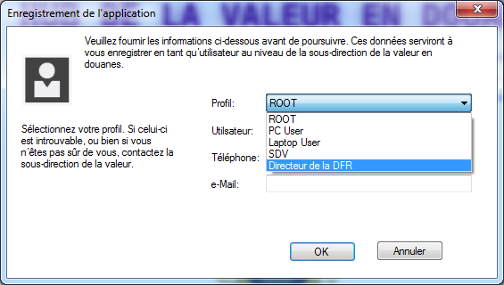
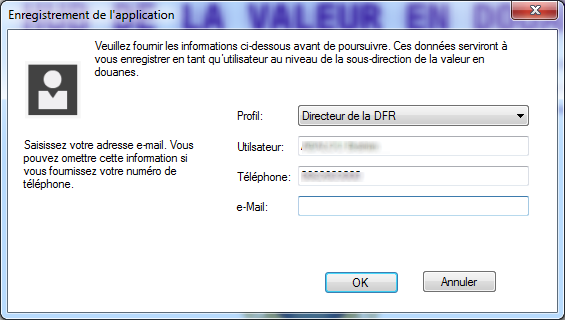
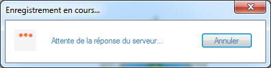
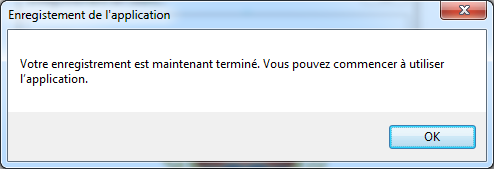

Avant de pouvoir utiliser le HUB, vous devez vous enregistrer au près du serveur des douanes. Vous serez amené à:
|  |
Cliquez sur la liste déroulante des profils pour choir celui qui vous est attribué. |
|
Il est impératif de sélectionner le profil adéquat. Dans le cas contraire, le serveur distant bloquera le HUB dans les minutes suivant votre enregistrement. Dans le doute, ou si votre profil est manquant, contactez la sous-direction de la valeur. |
|  |
|
|  |
L'assistant d'inscription transmettra vos informations au serveur central et procèdera à votre enregistrement. |
|  |
Une fois l'inscription terminée, un message confirmera le bon déroulement de l'opération. |